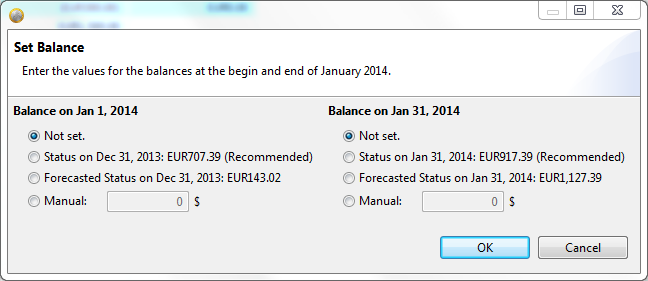

{kind=link}
 to select the previous month.
to select the previous month. to select the next month.
to select the next month.This views actually plans and tracks your monthly financial activities.
The view is divided into two separate sections. The upper part is the Summary Section. It shows the month navigation and basic figures of your selected plan. The lower part shows the planned and actual transactions of the selected month.
The section summarizes the plan so you can see the financial status of the selected month.
| Field | Description |
|---|---|
| Status on <1st-of-month> | The total of all accounts that are planning relevant at the beginning of the month (Opening Balance). |
| Current Status | The current balance as known by RsBudget. |
| Status on <last-of-month> | The total of all accounts that are planning relevant at the end of the month (Closing Balance). Unless the month has not yet been closed (see Set start and end balance), this is a forecast. |
| Ledgerless Accounting | The total of all missing transactions. The number reflects the amount that RsBudget still expects to occur in this month. |
| Relative Balance | The profit/loss calculation of this month. Unless the month has not yet been closed (see Set start and end balance), this is a forecast. |
| Absolute Balance | The difference to your custom Profit/Loss threshold.Unless the month has not yet been closed (see Set start and end balance), this is a forecast. |
| Planned Expenses | The total of all planned expenses. |
| Planned Income | The total of all planned income. |
| Planned Balance | The profit/loss calculation as planned in this month. |
| Actual Expenses | The total of all actual expenses (expenses that already occurred). |
| Actual Income | The total of all actual incoming transaction (income already booked). |
| Actual Balance | The profit/loss calculation using transactions already occurred. |
The transaction table shows all planned and actual transactions. A turquoise background identifies budgets. White background identifies single transactions. The following table describes the values displayed in each column.
| Column | Description |
|---|---|
| Date | The date this transaction was booked. The field is filled for actual transactions only. |
| Text | The transaction text. |
| Details | Details about the transaction, e.g. origin or receiver. (optional) |
| Budget | The budget this transaction belongs to and is accounted within. (optional) |
| Category | The category this transaction belongs to. |
| Planned | The planned amount. |
| Actual | The actual amount. The figure reflects the consumed amount when the row is a budget. |
RsBudget opens the current month by default. You can select another month by navigating with the links on top of the Summary Section.
to select the previous month. to select the next month.You'll need to create the plan for the month before you can start tracking. Click  at the
view's toolbar. The plan will be created from the General Plan.
at the
view's toolbar. The plan will be created from the General Plan.
You can delete a plan by clicking on at the view's toolbar.
Create a new transaction by
 directly above the transaction table. from the view's toolbar.
directly above the transaction table. from the view's toolbar.All methods will create a new transaction at the end of the table and scroll to the new row in order to make it visible. The editing cursor is placed within the Text field so you can start typing.
Double-click the value in the transaction table that you want to modify. Depending on the column, a text editor or combo box will appear so you can change the current value of the cell. Hit "Enter" when you made your change or click anywhere else on the screen. The new new value will be saved immediately.
You can cancel editing by simply pressing "Esc" on your keyboard. This will revert the change you already made in the editor and bring back the old value.
It is possible to change the order of transactions in the table. Right-click the row and select "Move Up" or "Move Down" from the context menu. The same action can be triggered by pressing Ctrl+Up or Ctrl+Down respectively.
All transactions can be sorted according to their actual transaction date by clicking the  button in the view's toolbar. Planned transactions will be added to the bottom of the table, keeping the previous order of these
transactions. Budgets are always at the top of the table.
button in the view's toolbar. Planned transactions will be added to the bottom of the table, keeping the previous order of these
transactions. Budgets are always at the top of the table.
Transactions can be converted into budgets and vice versa. Right-click on a row and select "Convert to Budget" or "Convert to Transaction" respectively.
Of course, you can delete transactions and budgets from the transaction table. If the transaction contains an actual amount then this will be deleted and the row becomes a planned transaction only. If there is no actual amount (planned transaction) then the row will be finally deleted.
 directly above the transaction table. from the view's toolbar.
directly above the transaction table. from the view's toolbar.RsBudget will ask you for confirmation before actually deleting the row(s) selected.
The Opening and Closing Balance of a month is kept separately. You need to define them when starting respectively finalizing the month. Click the button from the the view's toolbar. A separate dialog will appear.

The specific options vary depending on your current plan and situation. The left side defines the Opening Balance, the right side of the dialog defines the Closing Balance. You can either select a balance proposed or manually enter a specific amount for each of them. Click "OK" when you finished your input, or abort with "Cancel".